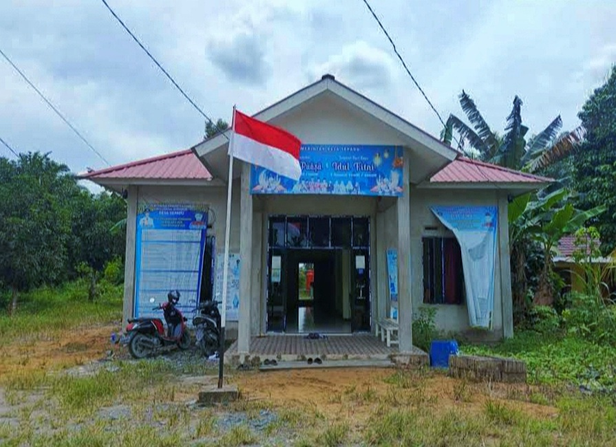
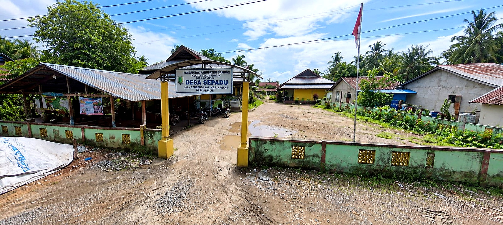
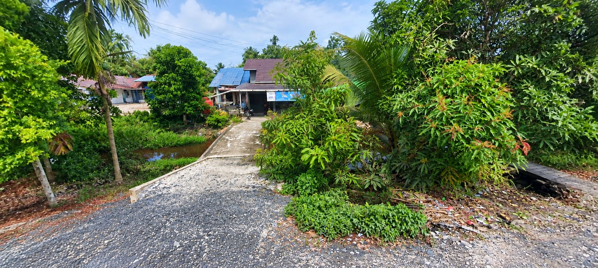
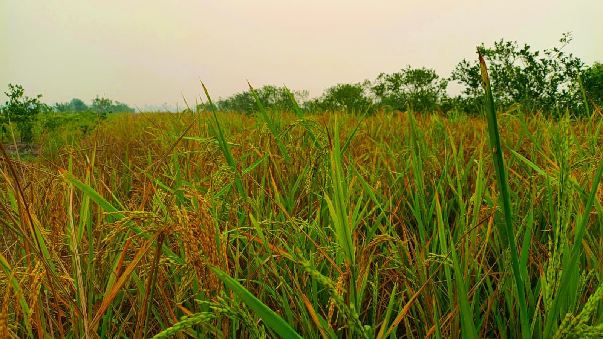
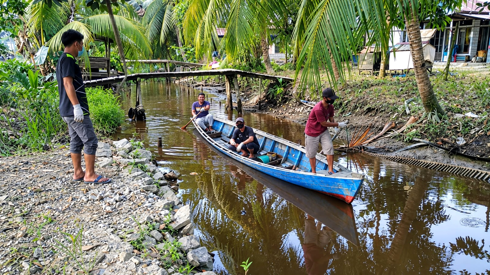
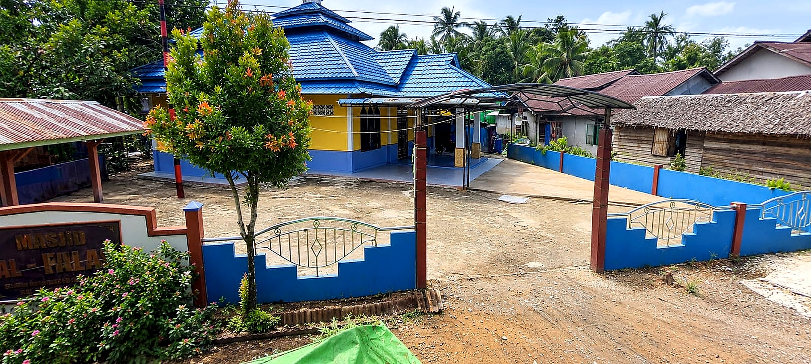

DOKUMENTASI DESA
Galeri
Potret Desa SepaduFOTO DESA
Desa Sepadu dalam Foto

Balai Desa Sepadu
Balai desa dengan bendera Merah Putih.

Gerbang Desa
Penanda masuk wilayah Desa Sepadu.

Lingkungan Desa
Suasana permukiman dan jalan lingkungan.

Sawah
Potret persawahan Desa Sepadu.

Gotong Royong
Warga membersihkan sungai bersama-sama.

Masjid Al-Falah
Salah satu fasilitas ibadah masyarakat.

Jalan Desa
Suasana jalan dan lingkungan desa.

Masyarakat
Potret kehidupan masyarakat.

Sungai Desa
Sungai dan lingkungan sekitar warga.